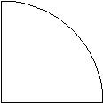
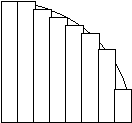
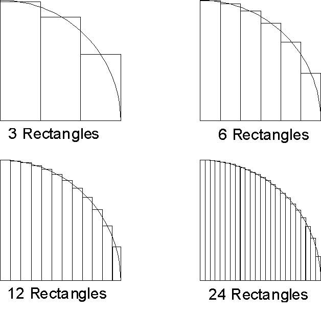
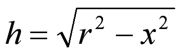

Information
Please read this entire page before starting to write code. You'll be glad you did.
The circle_pi function requires about 10 statements.
The leibniz_pi function requires about 6 statements.
This does not count variable declarations, comments, or curly braces.
For Linux and Mac OS X: (That's a lowercase 'L' and lowercase 'M' at the end)gcc -Werror -O -Wall -Wextra -ansi -pedantic driver.c pi.c -o pi
gcc -Werror -O -Wall -Wextra -ansi -pedantic driver.c pi.c -o pi -lm
The Circle Method
The Circle Method (Sort of like Riemann sums)Consider the quarter circle. Assume the circle has a radius r of length 2. (Having a radius of 2 is important.)
From the formula for the area of a circle:
you can easily determine that the area of the quarter circle is pi square units. You can also approximate the area computationally by adding up the areas of a series of rectangles. Each rectangle has a fixed width and the height is chosen so that the circle passes through the midpoint of the top of the rectangle. For example:Area = PI * r2 (with r = 2, Area = 4 * PI)
We can easily see how we can get a closer approximation by increasing the number of rectangles and at the same time, making the rectangles thinner:
As the number of rectangles goes to infinity and the width goes to zero, we get the value for pi.
For each rectangle, the width, w, is the same, derived by dividing the radius of the circle by the number of rectangles. The height, h, on the other hand, varies depending on the position of the rectangle. Rectangles closer to the center of the circle will be taller than those near the edge. If the midpoint of the rectangle in the horizontal direction is given by x, then the height of the rectangle can be computed using the distance formula:
The sum of the areas of the rectangles provides an approximation to the area of the quarter circle, hence, it is also an approximation of pi. The more rectangles there are, the closer the approximation.
Here are some results, using a small number of iterations:
Approximations for pi
Iterations Circle Method Leibniz Method
----------------------------------------------
1 3.464101615138 4.000000000000
2 3.259367328636 2.666666666667
3 3.206412665814 3.466666666667
4 3.183929220612 2.895238095238
5 3.171987823613 3.339682539683
6 3.164766816537 2.976046176046
7 3.160012188321 3.283738483738
8 3.156686931298 3.017071817072
9 3.154254281272 3.252365934719
10 3.152411433262 3.041839618929
Approximations for pi
Iterations Circle Method Leibniz Method
----------------------------------------------
1 3.464101615138 4.000000000000
10 3.152411433262 3.041839618929
100 3.141936857900 3.131592903559
1000 3.141603544913 3.140592653840
10000 3.141592998025 3.141492653590
100000 3.141592664482 3.141582653590
1000000 3.141592653934 3.141591653590
Notice that the width of each rectangle is the same, so you should not be calculating the width inside the loop. Just calculate it once before the loop and then use it in the loop.
- Calculate the midpoint of the current rectangle
- Don't use the previous value and add to it, this is what gives you too many rounding errors, resulting in incorrect output.
- Calculate the new height based on the radius and midpoint.
- Calculate the area of the new rectangle using height and width.
- Add the area of the new rectangle to the total area.
If you are getting this output (incorrect marked in red):
Approximations for pi
Iterations Circle Method Leibniz Method
----------------------------------------------
1 3.464101615138 4.000000000000
10 3.152411433262 3.041839618929
100 3.141936857900 3.131592903559
1000 3.141603544913 3.140592653840
10000 3.141592998025 3.141492653590
100000 3.141592664486 3.141582653590
1000000 3.141592653923 3.141591653590
Other Notes
/******************************************************************************
Function: substitute_char
Description: Given string, substitute old_char with new_char. Kind of like a
search and replace. Returns the number of substitutions.
Inputs: string - A pointer to a string that will be operated on. This is
a NUL-terminated character array.
old_char - The character to be replaced in the string.
new_char - The character that will be substituted into the string.
Outputs: The number (integer) of substitutions that occurred.
******************************************************************************/
int substitute_char(char *string, char old_char, char new_char)
{
/* Function body goes here ... */
}
|
We've only briefly talked about floating point numbers in the context of C programming. One of the
"interesting" features of floating point numbers (also known as real numbers) is that the computer
cannot represent all of them exactly. If I asked you to write out the exact decimal notation for 1/3,
you couldn't. There is an infinite number of threes after the decimal point in that number. Well,
the computer doesn't have an infinite set of memory either. So, what to do? Well, the computer will
approximate the real values. These approximations are close, but they are not exact. These
approximations introduce errors into the calculations. Usually, this isn't a big deal. But, if you
introduce many, many errors into the calculations, you will start to notice them.
Here's the idea and a way to fix it: If I have this: both of these statements are supposed to do the same thing:double x = 1.0 / 3.0; However, since the value of x is probably not exact (rounding errors), each time I add it, I introduce a little more rounding error. If I multiply it, I still introduce the error, but only once. If you add enough x's together, you will see that the value diverges from the value you get by multiplying once.x + x + x + x + x + x; 6 * x; Also note that this has the same problem, although you may be fooled into thinking that you aren't adding x over and over again: Here's a sample program that demonstrates the differences:total = 0; for (i = 0; i < 6; i++) total += x;
|
So, if you are getting incorrect values when approximating the value of pi above, it may be because you are adding small amounts during each iteration, causing the errors to grow.